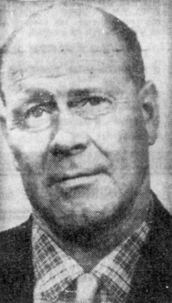

George Van Tassel
Contactee, 1910 to 1978

In 1947 he settled beside Giant Rock, a seven-story boulder in the Mojave Desert near Landers, California, and built a café and airstrip there. 1
He said that in 1953 a visitor from Venus woke him and taught him a technique for rejuvenating the human body. From 1953 to 1971 he hosted the yearly Giant Rock Interplanetary Spacecraft Convention, which drew as many as 10,000 people in 1959. 1
From 1954 he built the Integratron, which he described as a structure for research into rejuvenation, time and anti-gravity. He died in 1978, weeks before its planned opening. 1,2
Open in the interactive Watcher
Related
Sources
- George Van Tassel Wikipedia
- Integratron Wikipedia